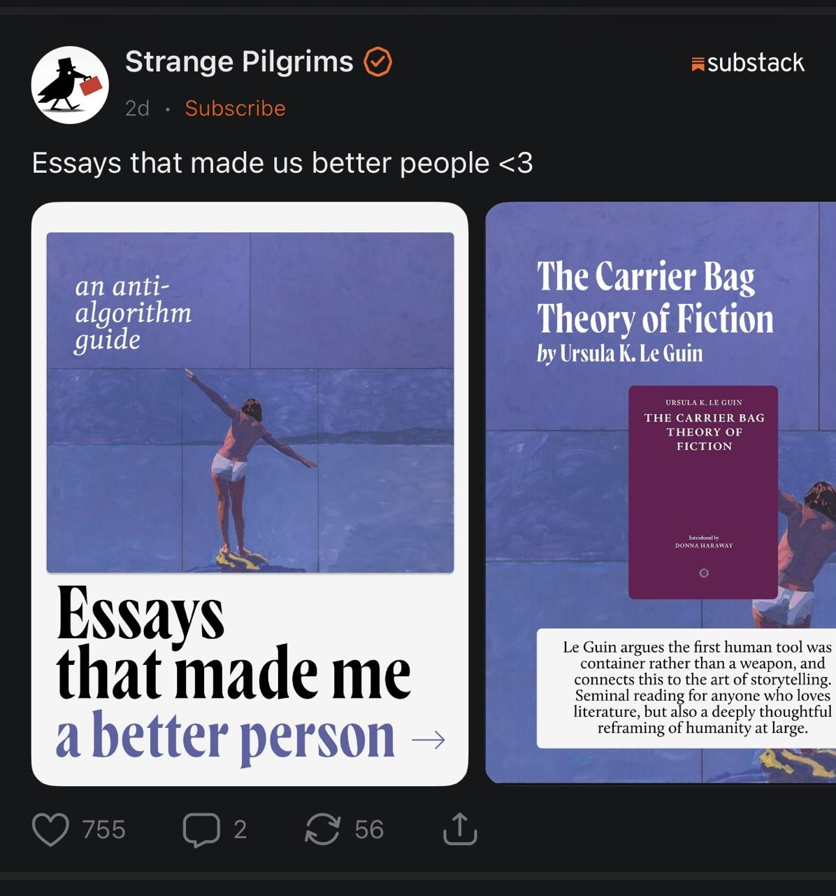
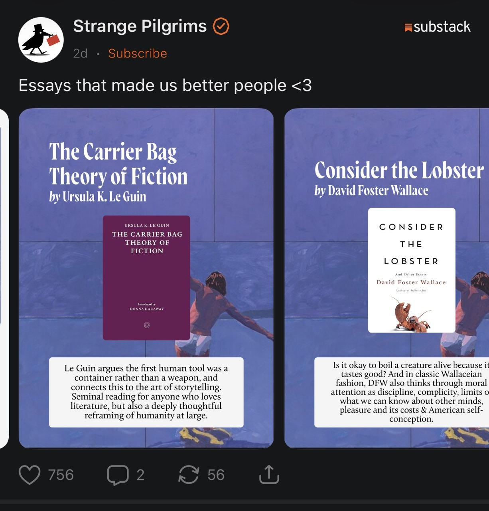

{kind=link}
{kind=link}
Let type lead
A clear serif voice, generous line breaks, a quiet source. Avoid a decorative quotation mark competing with the words.
More like a page you kept.
Less like a quote generator.
A reference collection and ten original directions for Arctic’s passage cards.
User-supplied Strange Pilgrims literary carousel. These are reference screenshots, not Arctic assets.


A clear serif voice, generous line breaks, a quiet source. Avoid a decorative quotation mark competing with the words.
Use an article image or a restrained original field. Keep text on a calm, opaque surface.
Cover → passage → reflection. Keep the same grid and source position through the sequence.
Article title, author when known, and domain. Arctic is a small colophon, not the subject.
Primary accounts of the work. The notes below are Arctic’s interpretation, not the designers’ instructions.
Cool archival minimalism, more room for artwork, warm book-like paper. Borrow the quiet hierarchy and intimacy; keep Arctic’s own mark and type.
See the original design work ↗Serif and sans work as a pair. A small information band gives the page a stable structure while the headline changes.
See the original design work ↗A repeatable carousel system with cover, questions, and closing grid. Useful precedent for rendering a small publication from structured content.
See the original carousel system ↗Strange Pilgrims’ official social links connect the publication and Instagram. The visual analysis above is based on the two screenshots you supplied; no claim is made about the complete Instagram feed.
Some ideas
do not arrive
all at once.
They wait
for us to
return.
Keep the
unfinished
thought.
It may open
a door.
These studies use system type, original SVG illustrations, and expanded palettes. Every card has a discreet mark instead of an Arctic wordmark. There are no generated paintings or remote image requests. Each direction changes composition, hierarchy, and reading rhythm—not just colour.
Production guidance to test before these studies become native sharing templates.